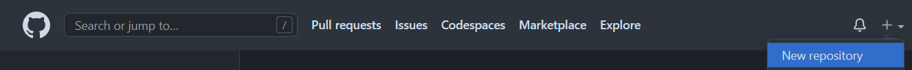
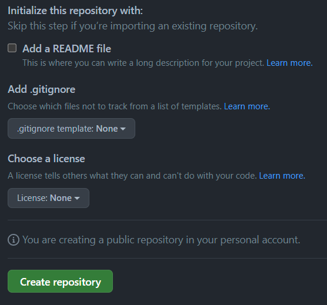

GitHub Overview
Contents
2.3. GitHub Overview#
GitHub is an online platform that allows, in part, to host git repository and offers features to facilitate collaboration during software development.
In git terminology, a platform to host git repository is called a remote.
This tutorial only covers the basics of GitHub. For a complete overview, we suggest reading the Official GitHub Quickstart.
2.3.1. Creating a repository on GitHub#
At the top-right, of the github website you will find a + icon.
Click on it, then choose the “New repository” option.

When creating the project, make sure to have no “Add a README file”, .gitignore, or License options selected. Since we already create a local project, this would result in conflict with the repository history.

2.3.1.1. SSH key#
Lastly, to give permission for Git to interact with GitHub an SSH key should be added to your account. Go on your profile (top right), then into Preferences, and into SSH Keys into the menu. You can paste your SSH public key there.
In case you do not have an SSH key, you can generate one on your project VM using
Note: The <comment> is optional, but can be helpful in identifying where the SSH key was generated.
$ ssh-keygen -t ed25519 -C "<comment>"
After running this command, you will find your SSH public key at the location ~/.ssh/id_ed25519.pub.
2.3.2. Interaction between Git and GitHub#
Once the project is create, you can find the remote url for you repository here:
Note: Select the “SSH” url instead of the “HTTPS” one.

To upload code to a remote repository, Git needs to be aware of it by registering the remote as follow
$ git remote add [remote-name] [url]
To push (upload) the version of the Git repository to a remote location, use the command
$ git push
Note: the first time a branch is pushed, it is required to specify the remote and the name of the branch for the remote.
$ git push -u [remote-name] [current-branch]
When changes are made on a remote repository, it is possible to pull (download) them locally using
$ git pull